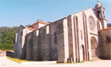
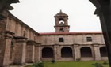
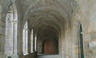

|
 |
 |
 |
| CASA RURAL |  |
LOCALIZACIÓN | |
CONTACTAR | MONASTERIO | GOLF | |
RUTAS | |
PLAYAS | |
FIESTAS | |
|
|
EL MONASTERIO DE ARMENTEIRA
 Armenteira es vocablo derivado, muy probablemente, del latín armentum, que significa ganado mayor, caballar o vacuno. Hoy, y desde hace siglos, es el nombre de un riachuelo, una parroquia y un monasterio. El riachuelo corre alegre y cantarín hasta verter sus aguas en el Umia. La parroquia, con unos mil habitantes, repartidos en quince núcleos de población, pertenece al municipio de Meis (Pontevedra) y a la diócesis de Santiago. El monasterio, antiguo y acreditado, ha dado nombre al lugar. El enclave donde se halla ubicado el monasterio es bellísimo e histórico. Se llama O Salnés. A fuerza de "amaños" filológicos, Celso García de la Riega ha defendido que Salnés significa "tierra de los adoradores de la luna"; pero no cabe duda que viene de salinas. Era en tiempos "tierra de salinas". Ya en el siglo IX, según consta documentalmente, las había en la villa de Noalla y en la isla de Arousa. Hoy la zona es más bien famosa por sus vinos. Otero Pedrayo ha escrito que "el encanto del verdadero Salnés reposa en el ondulado tapiz de sus viñedos cuidados como jardines". Y más adelante: "Sus vinos son el tinto espadeiro, de regular fortaleza, y el albariño, blanco, ligero, con aguja, un vino rebelesiano, dicen que derivado de plantas francesas traídas por los monjes del Cister de Armenteira y otros monasterios". O Salnés perteneció antaño a la Terra de Santiago, señorío de grandes dimensiones, autonomía y poderío, sujeto a los arzobispos y dividido en tenencias o feudos, que se disputaban ricos-hombres y caballeros de ilustres linajes y apellidos sonoros. Tierra, por ende, erizada de torres y castillos, que la defendían de las incursiones de normandos, sarracenos y toda suerte de piratas, pero también con demasiada frecuencia, guaridas de nobles ávidos de amontonar tesoros expoliando a viajeros y pobres campesinos. Fue también tierra de monjes y monasterios. La atravesaron san Fructuoso y la turbamulta de sus discípulos, y más adelante san Rosendo, rodeado del doble prestigio de su nobleza y santidad. Desde tiempos muy antiguos la comarca se pobló de monasterios: San Salvador de Lérez, San Xoán de Poio, Calogo, Sobradelo, Lantaño, San Xulián de Arousa, Sobrán, Nogueira, Armenteira... Casi todos acabaron por desaparecer, vencidos por los siglos y las calamidades, o se convirtieron en prioratos y granjas de cenobios poderosos, como San Martín Pinario o San Pelayo de Antealtares. Ramón Cabanillas ha trazado con simpatía la figura de los priores, "ledos e fidalgos", que administraban las haciendas monásticas: |
||
|
Mestres na vida, na virtú e na cencia, Que sabían ¡ou tempos esquencidos! Cantal-a misa, escorrental-as meigas, Acoller y-amparar orfos e probes, Rir co-as rapazas, consellal-as vellas, Darlle leito e xantar ós pelegrinos, Pechar por fuero as portas da sua igrexa á xusticia do rei, cobral-os diesmos E disponer vendimias e trasegas. |
 | |
|
Orígenes del monasterio En Armenteira se alza el majestuoso monasterio cisterciense del siglo XII, Santa María de Armenteira. El encanto del lugar se apodera enseguida del ánimo del visitante. Situado en un seno de la montaña de Castrove, dominando una alta y hermosa cañada, recogido, solitario, respira paz y devoción. Disienten los autores acerca de la fundación de Armenteira. Unos la atribuyen a san Fructuoso: otros, al conde Raimundo de Borgoña. Navascués Palacio afirma que el abad Ero "sometió un muy antiguo cenobio a la disciplina cisterciense". Son simples conjeturas. Nada se opone a que sigamos considerando como primer fundador y padre de Armenteira al que los fieles de la comarca siguen invocando con el nombre de san Ero. En la vida tradicional del mismo hay que hacer una distinción importante. La leyenda de su embeleso bisecular consituye una simple adaptación de un tema literario –"el monje y el pajarillo"– muy antiguo y con múltiples variantes, como demostró hace ya bastantes años la erudición de don J. F. Filgueira Valverde. En lo demás puede haber elementos históricos, y probablemente los hay. Desde luego, Ero –o Hero– era un nombre gallego bien documentado en los siglos X, XI y XII, por lo menos. En la primera mitadl del XII, viviría un noble señor de este nombre junto con su esposa en sus posesiones de Armenteira; su palacio, "grandioso para aquel tiempo", existía aún, muy deteriorado, en tiempo del padre Duarte. Como el matrimonio no tuviera descendencia, decidiría convertir su casa y patrimonio en uno de tantos monasterios familiares y, por tanto, dúplices entonces existentes. Los conventos o monasterios dúplices eran aquellos donde había una comunidad de religiosos y otra de religiosas. Pero, al cabo de unos pocos años, muy probablemente a instancias de Alfonso VII, empeñado en colonizar el país cubriéndolo de monasterios de monjes blancos, Ero resolvería afiliar su fundación a la Orden del Cister. San Bernardo, ya cercano a su muerte, le enviaría cuatro de sus monjes, como quiere la tradición. Y, dado que la Orden no admitía monasterios dúplices, la esposa de Ero y las señoras que le había seguido al consagrarse a Dios, tendría que retirarse al lugar que luego se llamó La Freiría, ¿tal vez con el propósito de afiliarse también a la reforma cisterciense? En el terreno propiamente histórico, la documentación disponible nos permite asistir a la formación del patrimonio territorial de un cenobio naciente a una vida nueva. A los monasterios familiares, como es bien sabido, no se les hacían donaciones; no las necesitaban; su base económica era el patrimonio familiar. El abad Ero de Armenteira no empezó a recibir donaciones hasta después de haber decidido agregar su monasterio a la Orden cisterciense. Los tres documentos más antiguos del archivo conventual están fechados en 1151: el primero atestigua la donación de una heredad en Gondes; el segundo, la de otra heredad en Vilar y Mauriz, a cambio de una vaca y su ternera; el tercero, fechado el 5 de diciembre, es un solemne diploma real por el que Alfonso VII dona al monasterio el coto de Barrantes, todo el realengo de Armenteira y Gondes, con sus heredades y salinas, así como también Castromao, y concede el privilegio de coto al monasterio, Gondes y Castroman, señalando sus límites. Es muy probable, por no decir seguro, que Armenteira fuera ya en 1151 un monasterio del Cister. Su titular era santa María, conforme a la regla general de los cistercienses, y, según uno de los documentos citados, Ero y su comunidad vivían "sub Regula Sancti Benedicti" -bajo la Regla de San Benito-; lo que no significa en modo alguno que fuera benedictinos de hábito negro –"monjes negros", como decían entonces–, pues los cistercienses también guardaban la Regla con las "cogullas blancas" (hábitos blancos). Y, lo que es más decisivo, la misma fórmula "sub Regula Sancti Benedicti" reaparece en documentos de 1176, 1187, y 1198, entre otros. La primera mención de Armenteira como monasterio cisterciense se halla probablemente en un estatuto del capítulo general de 1190. Fuente: Ayuntamiento de Meis |
||
| Casa rural | Localización | Contactar | Monasterio | Club de golf | Rutas | Playas | Fiestas | ||